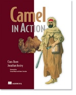
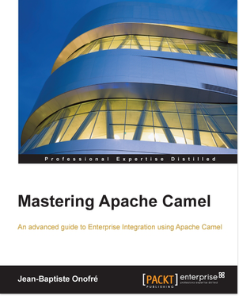
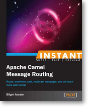

Books
This page lists the known books about Apache Camel. If you happen to know a book which is not listed, then please contact us (i.e., using the Mailing Lists).
- Cloud Native Integration with Apache Camel
- Camel in Action 2nd edition
- Camel in Action
- Apache Camel Developer’s Cookbook
- Camel Design Patterns
- Mastering Apache Camel
- Instant Apache Camel Message Routing
- Instant Apache Camel Messaging System
- Enterprise Integration Patterns
Cloud Native Integration with Apache Camel
Cloud Native Integration with Apache Camel by Guilherme Camposo. Published by Apress in August 2021.
You will learn to connect with databases, create REST APIs, transform data, connect with message oriented software (MOMs), secure your services, and test using Camel. You will also learn software architecture patterns for integration and how to leverage container platforms, such as Kubernetes. This book is suitable for those who are eager to learn an integration tool that fits the Kubernetes world, and who want to explore the integration challenges that can be solved using containers.
Camel in Action 2nd edition
Camel in Action 2nd edition by Claus Ibsen and Jonathan Anstey. Published by Manning in 2018.

Camel in Action, Second Edition is the most complete Camel book on the market. Written by core developers of Camel and the authors of the highly acclaimed first edition, this book distills their experience and practical insights so that you can tackle integration tasks like a pro.
Camel in Action
Camel in Action by Claus Ibsen and Jonathan Anstey. Published by Manning in December 2010.

Camel in Action is a Camel tutorial full of small examples showing how to work with the integration patterns. It starts with core concepts like sending, receiving, routing, and transforming data. It then shows you the entire lifecycle and goes in depth on how to test, deal with errors, scale, deploy, and even monitor your app—details you can find only in the Camel code itself. Written by the developers of Camel, this book distills their experience and practical insights so that you can tackle integration tasks like a pro.
Apache Camel Developer’s Cookbook
Apache Camel Developer’s Cookbook by Scott Cranton and Jakub Korab. Published by Packt publishing in December 2013.
Apache Camel Developer’s Cookbook is a collection of over 100 how-to recipes for working with Apache Camel. It is intended for use by busy developers who may not necessarily have time to learn the whole framework in order to be productive. It does this without sacrificing any of the detail needed to build performant, reliable system integrations. Developers new to Apache Camel will find useful information on how to set up Camel in both regular Java and Spring-based applications, through to the ins-and-outs of the various Enterprise Integration Patterns (EIPs) (how they are affected by multithreading, transactions etc.), payload transformations and testing. Experienced developers will also benefit from coverage of parallel and asynchronous processing, error handling and compensation, transactions and idempotency, monitoring and debugging, as well as Camel’s support for security. All recipes are backed by fully unit-tested example code in both the Java and XML DSLs, all of which is available on github at CamelCookbook/camel-cookbook-examples.
Camel Design Patterns
Camel Design Patterns by Bilgin Ibryam. Published by LeanPub in start of 2016.
Patterns, Principles, and Practices for designing Apache Camel applications. A developer friendly guide with real world use cases and practical tips for designing and architecting Apache Camel applications.
There are great books about Apache Camel already, but this book is a little bit different. Here is why.
Throughout the building of a Camel application, there are many levels of design decisions to be made. Knowing the Camel framework and the Enterprise Integration Patterns (EIPs) is a must, but not enough to architect a real world integration application. Mastering such applications requires an understanding of EIPs, Messaging, Microservices and SOA principles, and distributed system concepts as a whole.
Driven by real world experiences, this book consolidates the most commonly used patterns and principles for designing Camel applications. For each pattern, there is a problem description with a context, a proposed solution, and Camel specifics and tips around the implementation. Patterns range from individual Camel route design for happy path scenarios, to error handling and prevention practices, to principles used in the deployment of multiple routes and applications for scalability and high availability purposes.
Mastering Apache Camel
Mastering Apache Camel by Jean-Baptiste Onofré. Published by Packt publishing in June 2015.

This book will provide you with the skills you need to efficiently create routes using Apache Camel.
After briefly introducing the key features and core concepts of Camel, the book will take you through all the important features and components, starting with routing and processors. You will learn how to use beans in Camel routes, covering everything from supported registries and annotations, to the creation of an OSGi bundle and writing route definitions with Blueprint DSL. Leverage the Enterprise Integration Patterns (EIPs) supported by Camel and implement them in your routes. You will then see how components and endpoints handle exchanges in Camel, and how you can use them to create a complete and powerful mediation framework. You will finally learn how to tackle errors and perform testing to ensure that your integration projects are working successfully.
Instant Apache Camel Message Routing
Instant Apache Camel Message Routing by Bilgin Ibryam. Published by Packt publishing in August 2013.

Instant Apache Camel Message Routing will help you to get started with Camel and Enterprise Integration Patterns in the matter of hours. It is a short, focused and practical guide to Apache Camel that provides a high level overview of the Camel architecture and message routing principles. It introduces a number of integration patterns, complete with diagrams, common use cases, and examples about how to use them.
The book is easy to read and ideal for developers who want to get started with Camel and message routing quickly.
Instant Apache Camel Messaging System
Instant Apache Camel Messaging System by Evgeniy Sharapov. Published by Packt publishing in September 2013.
Instant Apache Camel Messaging System is a practical, hands-on guide that provides you with step-by-step instructions which will help you to take advantage of the Apache Camel integration framework using Maven, the Spring Framework, and the TDD approach.
Instant Apache Camel Messaging System introduces you to Apache Camel and provides easy-to-follow instructions on how to set up a Maven-based project and how to use unit tests and mocks to develop your application in a “test first, code later” manner. This book will help you take advantage of modern Java development infrastructures including the Spring Framework, Java DSL, Spring DSL, and Apache Camel to enhance your application.
Enterprise Integration Patterns
Enterprise Integration Patterns by Gregor Hohpe and Bobby Woolf. Published by Addison Wesley in October 2003.

This is known as the EIP book which distills 65 EIP patterns, which Apache Camel implements. If you want to learn the EIP patterns better then this is a great book.
This book provides a consistent vocabulary and visual notation framework to describe large-scale integration solutions across many technologies. It also explores in detail the advantages and limitations of asynchronous messaging architectures. The authors present practical advice on designing code that connects an application to a messaging system, and provide extensive information to help you determine when to send a message, how to route it to the proper destination, and how to monitor the health of a messaging system. If you want to know how to manage, monitor, and maintain a messaging system once it is in use, get this book.